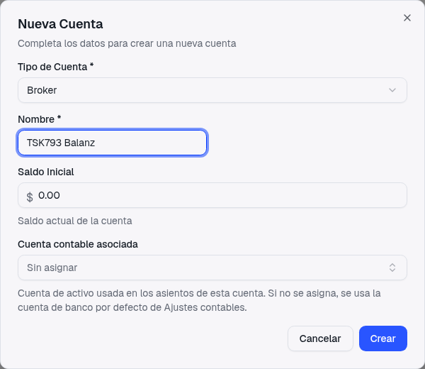
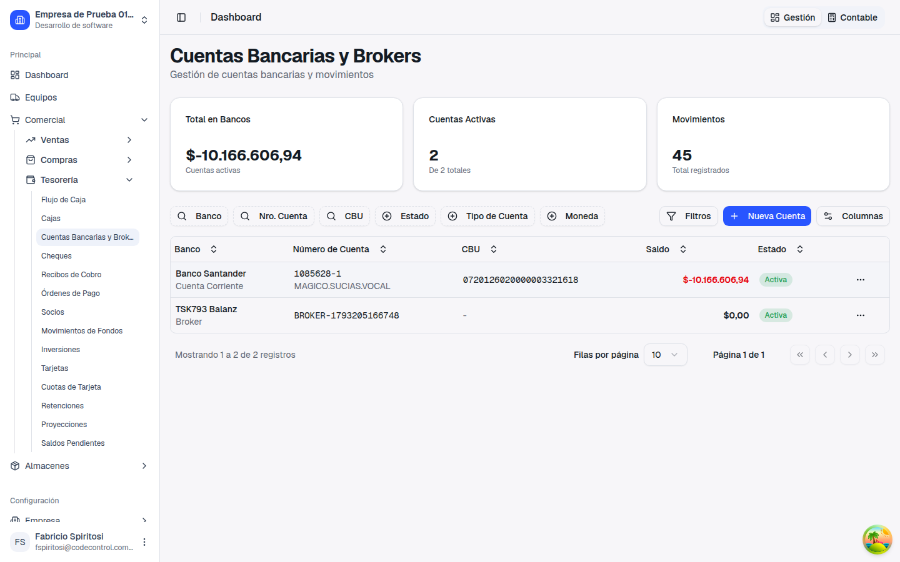
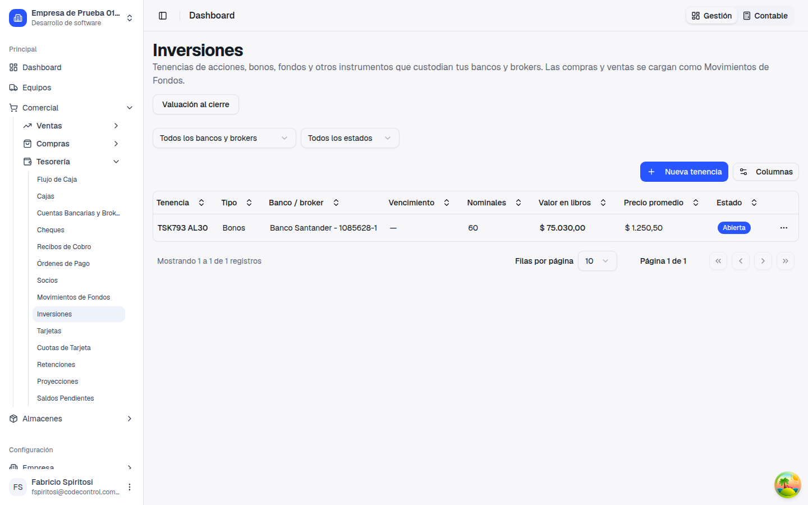
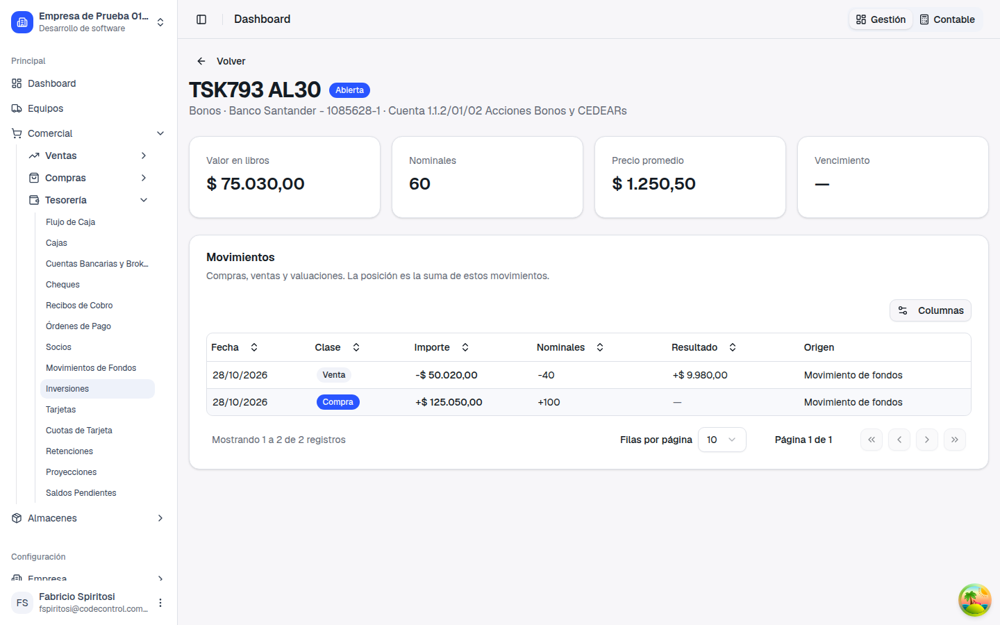
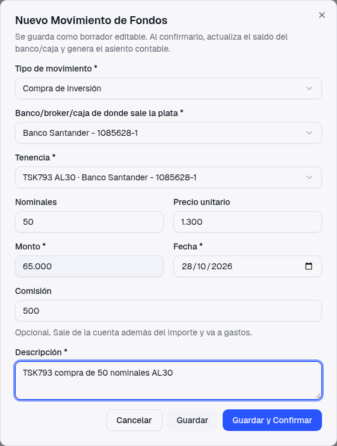
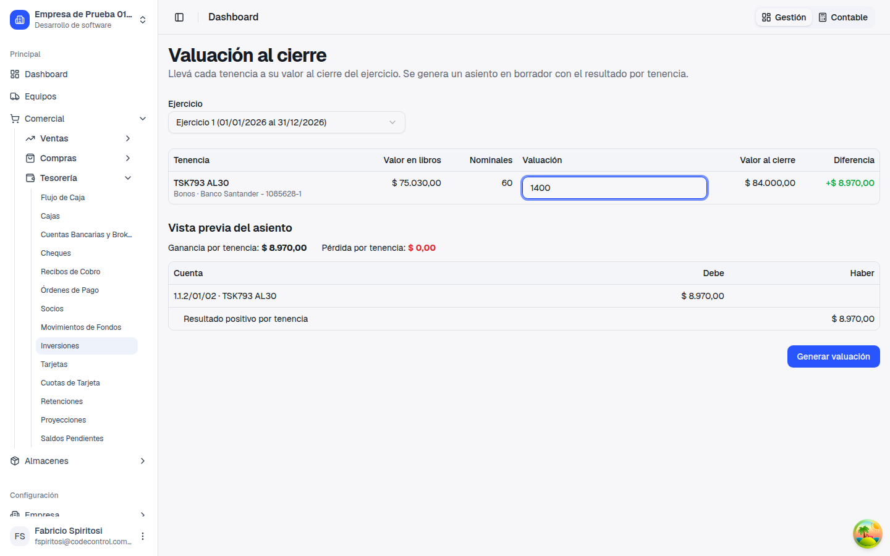
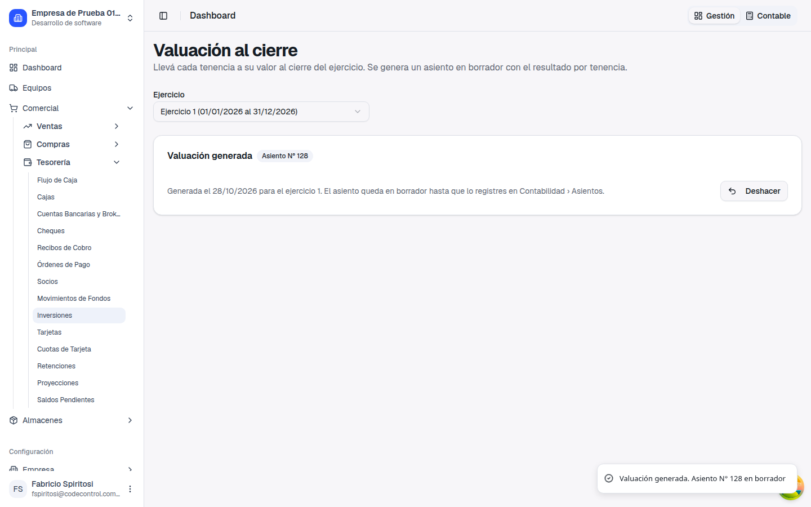
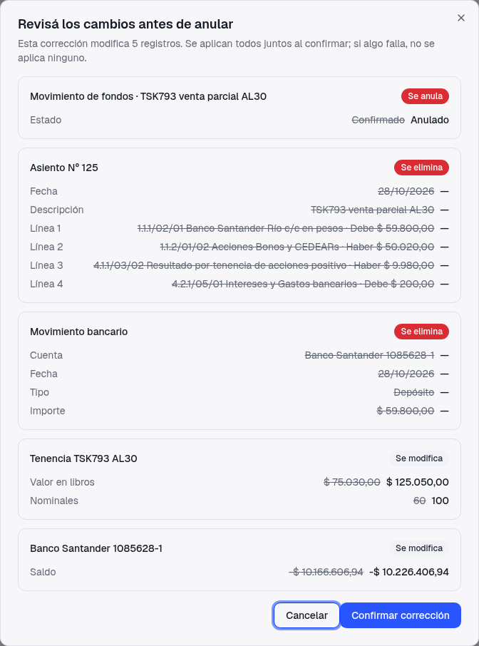
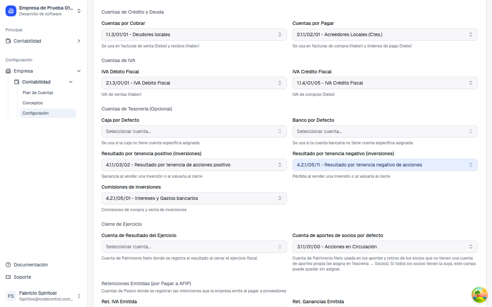

Inversiones: brokers, tenencias y resultado por tenencia al cierre
Guía de presentación — qué pediste, qué cambió, cómo se registra una compra, una venta y la valuación al cierre paso a paso con un ejemplo real, qué hay que configurar y qué queda para la próxima entrega
1. Qué pediste
"El módulo de inversiones lo manejaría con la complejidad de una plataforma de bróker pero con la simplificación contable real."
Pedido del cliente
El resultado por tenencia (lo que pagaste por un instrumento contra lo que vale al 31/12) era lo más
difícil de llevar a mano. No hace falta seguir el día a día del mercado: alcanza con el
capital de cada instrumento y su resultado.
Antes
No había dónde registrar un broker ni las inversiones. La plata que salía del banco hacia un bono
o un fondo se cargaba como un gasto o una transferencia suelta, y el resultado al cierre se
calculaba aparte, a mano.
Ahora
Cargás el broker, la tenencia, las compras y las ventas como Movimientos de Fondos con su asiento,
y al cierre del ejercicio el sistema genera solo el asiento de resultado por tenencia.
2. Qué cambió
Brokers como cuenta de Tesorería
La sección Tesorería → Cuentas Bancarias y Brokers (antes "Cuentas Bancarias") tiene un
tipo de cuenta nuevo: Broker. Solo pide el nombre (por ejemplo, Balanz): no hay CBU ni
alias. El broker tiene su propio saldo y se le pasa plata con la Transferencia entre cuentas
de siempre.

Alta de un broker: tipo, nombre y cuenta contable.

El broker aparece en el listado junto con los bancos.
Tenencias: un instrumento dentro de un banco o broker
En Tesorería → Inversiones ves las tenencias con su valor en libros, sus nominales y
su precio promedio. Si el mismo bono está en dos brokers, son dos tenencias distintas.

El listado de tenencias.
Al entrar a una tenencia ves su historial: cada compra, venta y valuación, con el resultado de las
ventas. Los nominales y el valor en libros no se editan a mano: salen de esos movimientos.

El detalle de una tenencia y su historial.
Hay 12 tipos de instrumento: acciones, CEDEARs, bonos, opciones, letras, futuros,
licitaciones, obligaciones negociables, fondos comunes, fideicomisos, cauciones y plazo fijo. Los
que son por unidades llevan nominales (opcionales); algunos llevan vencimiento.
Compra y venta como Movimientos de Fondos
En Tesorería → Movimientos de Fondos hay dos tipos nuevos: Compra de
inversión y Venta de inversión. Heredan todo lo que ya conocés: borrador,
confirmación con asiento, y editar, eliminar o anular con la propuesta del TSK-792.
Valuación al cierre
Una pantalla nueva donde cargás el valor de cada tenencia al 31/12 y el sistema arma el asiento del
resultado por tenencia.
3. Paso a paso con un ejemplo: el bono AL30
Comprás 100 nominales de AL30 a $1.250,50 (total $125.050), vendés 40
por $60.000 con $200 de comisión, y al 31/12 el bono cotiza a $1.400.
a) Crear la tenencia
En Tesorería → Inversiones tocá Nueva tenencia.
Elegí el banco o broker, el tipo (Bonos), el nombre
(AL30) y la cuenta contable del activo (obligatoria).
b) Registrar la compra
En Movimientos de Fondos tocá Nuevo Movimiento
y elegí Compra de inversión.
Elegí el banco, broker o caja de donde sale la plata y la tenencia.
Cargá nominales y precio unitario: el monto se
calcula solo (100 × $1.250,50 = $125.050). Si no tenés nominales, cargás el importe directamente.
Si hubo comisión, cargala aparte: sale del origen además del
importe y va a una cuenta de gasto. Guardá y confirmá.

Compra con nominales: el monto sale de nominales × precio. (Ejemplo con otros números, sin guardar.)
c) Registrar la venta parcial
Nuevo Movimiento → Venta de inversión. El origen es la
tenencia y el destino, el banco o broker donde entra la plata.
Cargá los nominales vendidos (40) y el importe cobrado
bruto ($60.000). Cargá la comisión ($200) aparte: entra al destino lo cobrado menos la comisión.
Concepto
Cuenta
Importe
Cobrado neto
Banco o broker (Debe)
$59.800
Comisión
Comisiones de inversiones (Debe)
$200
Costo de lo vendido
Tenencia AL30 (Haber)
$50.020
Ganancia
Resultado por tenencia positivo (Haber)
$9.980
El costo de lo vendido es el valor en libros por la parte vendida, a
precio promedio ponderado: 40/100 de $125.050 = $50.020. El resultado
($60.000 − $50.020 = $9.980) se registra en ese momento, como pediste. Quedan 60 nominales
con valor en libros de $75.030. Si más adelante volvés a comprar AL30 en el mismo lugar, se suma a la
misma tenencia.
Venta total y fondos sin nominales
Venta total o vencimiento: marcá Venta total (cierra la tenencia). El
resultado es lo cobrado menos el valor en libros, va en el mismo asiento y la tenencia queda cerrada.
Tenencias sin nominales (fondos, cauciones, fideicomisos, plazo fijo): una venta
parcial baja el capital por lo cobrado y el resultado aparece al cierre o en la venta total.
d) Valuar al cierre del ejercicio
En Inversiones tocá Valuación al cierre y
elegí el ejercicio (necesitás el permiso de aprobar).
Por cada tenencia cargá el valor al cierre o, si tiene
nominales, el precio por nominal: 60 × $1.400 = $84.000.
La vista previa muestra la diferencia contra el valor en
libros (+$8.970) y el asiento resultante. Revisala y tocá Generar valuación.

La valuación con su vista previa antes de generar.
Se crea un asiento en Borrador, con fecha de fin del ejercicio, contra la cuenta de
resultado por tenencia. Lo revisás y lo registrás desde Contabilidad → Asientos. El valor cargado ($84.000)
pasa a ser el nuevo valor en libros de la tenencia.

La valuación generada. Mientras el asiento esté en Borrador se puede deshacer.
Hay una valuación por ejercicio, y se hacen en orden entre ejercicios.
Se hace antes del cierre contable: con el ejercicio cerrado no se puede valuar.
Si una tenencia tiene ventas posteriores a la fecha de cierre, el sistema no valúa y
te dice cuáles son: las anulás, valuás y las volvés a cargar.
Deshacer: borra el asiento y devuelve el valor en libros anterior, mientras el
asiento siga en Borrador.
4. Reglas que cuidan los números
Una tenencia nunca queda en negativo: no se vende más de lo que hay, ni más
nominales de los que tiene.
Una venta total tiene que ser el último movimiento de la tenencia.
No se cargan compras ni ventas con fecha anterior a una venta ya registrada de esa
tenencia, ni movimientos con fecha igual o anterior a una valuación.
La comisión de una venta tiene que ser menor al importe cobrado.
Una tenencia con movimientos no se elimina, y no se puede cambiar su cuenta contable, su banco o
broker ni su tipo.
Corregir o anular: la propuesta de siempre
Anular, eliminar o editar una compra o venta funciona como en el TSK-792: antes de aplicar te
muestra todo lo que cambia. Acá, anular la venta parcial del ejemplo borra su asiento y su movimiento
bancario, y devuelve la tenencia a 100 nominales y $125.050.

Anular la venta parcial: la tenencia vuelve a su posición anterior.
Si la tenencia tiene una venta posterior, hay que anular primero esa venta
(Podés resolverlo); si ya fue valuada, hay que deshacer
la valuación primero.
5. Qué hay que configurar
Ajustes contables (una sola vez)
En Empresa → Contabilidad → Configuración, dentro de las cuentas de Tesorería,
elegí las tres cuentas nuevas. Sin ellas, la compra, la venta o la valuación te avisan qué falta.
Resultado por tenencia positivo (inversiones): sugerida 4.1.1/03/02.
Resultado por tenencia negativo (inversiones): sugerida 4.2.1/05/11.
Comisiones de inversiones: la cuenta de gasto donde van las comisiones.

Las tres cuentas nuevas en Ajustes contables.
Permiso y cuentas
Permiso nuevo "Inversiones" (ver, crear, modificar, eliminar y aprobar). El rol
Administrador lo recibe al desplegar; los roles personalizados se lo otorgan desde Roles. La
valuación pide además el permiso de aprobar.
Cada tenencia necesita su cuenta contable de activo, y cada broker puede tener la
suya (si no, usa la cuenta de banco por defecto).
6. Qué no cambia
✓
Todo está en pesos: dólares y moneda extranjera quedan para la próxima entrega.
✓
Dividendos y rentas: no suman al instrumento; quedan para la próxima entrega.
✓
Cotizaciones de mercado, órdenes e integración con brokers: no se incluyen. El valor al cierre lo cargás vos.
✓
No se admiten posiciones vendidas (opciones o futuros lanzados) ni tenencias en negativo.
✓
Los movimientos de fondos existentes y la transferencia entre cuentas funcionan igual que antes.